Mahathaya's Omnipresence and Prabhakaran's Insecurity
Mahathaya's Omnipresence and Prabhakaran's Insecurity
Jaffna Monitor hellojaffnamonitor@gmail.com 17 Keeping Force and LTTE and violence in the south involving government forces and Janatha Vimukthi Peramuna militants. Both major political parties in the election pledged to revoke the Indo-Sri Lanka Accord and sought the withdrawal of Indian troops. By this time, the LTTE, also cornered in the Sri Lankan jungles by the IPKF, sought a strategic pause. To achieve this, they initiated peace talks with President Premadasa's government, guided by the Tamil adage "an enemy's enemy is my friend." The primary goal of these talks was to facilitate the withdrawal of Indian forces from Sri Lanka. The Premadasa government, aiming to fulfill a key election promise of expelling Indian troops from Sri Lanka, initiated peace talks with the LTTE. In an effort to lend credibility and a formal structure to their negotiations with the LTTE, the Premadasa government advised the LTTE to establish a political party. This move aimed to provide a legitimate platform for dialogue and facilitate a more structured approach to peace talks. Prabhakaran approved the formation of a political party for the LTTE, the People's Front of Liberation Tigers (PFLT), or Viduthalai Pulikal Makkal Munnani, appointing Mahathaya as its head and "Yogi" Yogaratham as its Secretary. The peace talks garnered immense media coverage, both locally and internationally. The LTTE delegation, led by Mahathaya, was accommodated in Colombo as guests of the Sri Lankan government, staying in five-star hotels and participating in the negotiations. During this time, Mahathaya became the talk of the town, with his presence and activities extensively featured in TV, newspapers, and magazines, marking a peak in his public visibility. Mahathaya's Omnipresence and Prabhakaran's Insecurity Trustworthy sources from the LTTE told the Jaffna Monitor that the rising prominence and public acknowledgment of Mahathaya caused uneasiness for Prabhakaran, his Leader, who had a reputation for being insecure. A former prominent LTTE leader, who is currently living in exile and chose to remain anonymous, shared insightful reflections with the 'Jaffna Monitor' magazine about the atmosphere during Mahathaya's peak popularity. He described a time when Mahathaya's presence was ubiquitous in the media: "If you woke up and read the newspaper, there was Mahathaya; if you turned on your radio, there was Mahathaya. His name was virtually everywhere." This omnipresence in the media made Mahathaya a household name, significantly elevating his profile. The former Leader further argued that such widespread recognition could easily lead to feelings of insecurity in others, especially in a person like Prabhakaran, known for his inherent insecurities. The LTTE's Strategic Blunder: Mahathaya's Role in the Amirthalingam Assassination On July 13, 1989, amidst ongoing peace talks between an official LTTE delegation and President Ranasinghe Premadasa's government in Colombo, Appapillai Amirthalingam, the Leader of the Tamil United Liberation Front (TULF), and former TULF Jaffna MP Vettivelu Yogeswaran were assassinated on Colombo's Bullers Road. The assailants, Rasiah Aravindarajah (Visu), Peter Aloysius Leon (Vigna), and Sivakumar (Arivu), active members of the LTTE, were known as Appapillai Amirthalingam Vettivelu Yogeswaran Mahathaya with IPKF officers.
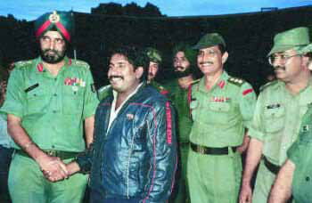
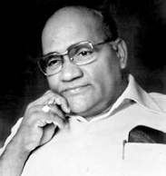
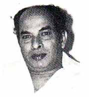
Jaffna Monitor hellojaffnamonitor@gmail.com 18 Mahathaya's men and were linked directly to him, who was at the time leading the LTTE's peace negotiations. These killings, carried out under the orders of LTTE leader Velupillai Prabhakaran, resulted in the assassins being gunned down by Amirthalingam's security officer, Nissanka Thibbotumunuwa. Despite initial denials by the LTTE's political wing and its General Secretary, Yogaratnam Yogi, the involvement of the LTTE, and particularly Mahathaya's faction, in these assassinations was widely recognized and condemned. The assassination, while achieving its immediate goal, is considered a significant tactical and strategic blunder by the LTTE, a view echoed not only by external observers but also by former LTTE cadres, as told to us (Jaffna Monitor). Several reasons contribute to this perception of failure. One crucial aspect was the loss of two valuable LTTE members, Visu and Vigna. Former LTTE leaders, now living in exile and speaking anonymously with the Jaffna Monitor, provided insight into this view. They noted that before Amirthalingam's assassination, the LTTE had primarily conducted a single major suicide attack on July 5, 1987, against the Sri Lankan army at Nelliady Madhya Maha Vidyalayam, executed by Vallipuram Vasanthan, also known as Captain Miller, the first Black Tiger. The second suicide attack attributed to the LTTE was the assassination of former Indian Prime Minister Rajiv Gandhi on May 21, 1991, although the LTTE never officially claimed the attack or included the assassin, Thanu, in their list of Great Heroes (Maveerar). These ex-leaders criticized the planning and execution of Amirthalingam's assassination, orchestrated by Mahathaya's group, likening it to an unplanned suicide Appapillai Amirthalingam Amirthalingam's loyal security officer, Nissanka Thibbotumunuwa, who gunned down Amirthalingam's assassins, captured with Amir's son, Dr. Bhagirathan Amritalingam. Amirthalingam alongside former Indian Prime Minister Indira Gandhi and then External Affairs Minister P. V. Narasimha Rao in 1983. One of Amirthalingam's assassins, Visu (extreme right), with, from left: Aruna, Victor, Lingam, Pottu Amman, and Pulendran at the LTTE's military training camp in Rajapalayam, Tamil Nadu. This photo is significant as it provides evidence of Visu being trained in the LTTE's camp.
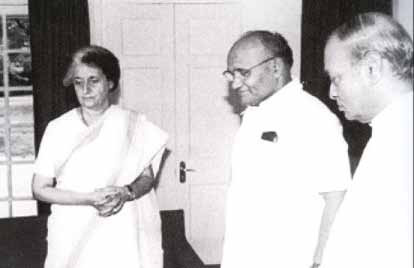
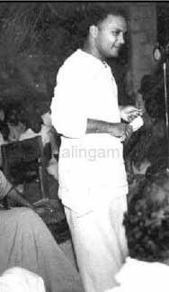
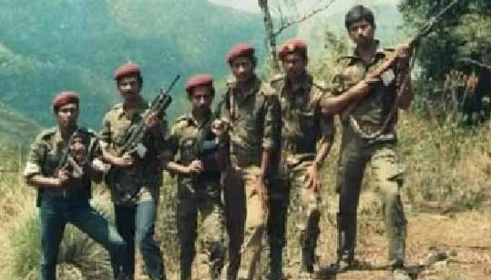
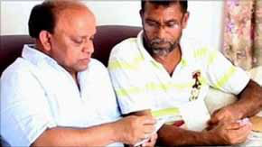
Jaffna Monitor hellojaffnamonitor@gmail.com 19 attack. They argued that Amirthalingam, a political figure, and not a military target, could have been assassinated in numerous other ways that wouldn't have resulted in the loss of key LTTE operatives. Instead, they described the approach taken – attacking Amirthalingam in his own home, surrounded by his loyal bodyguards – as tactically unsound and counterproductive, illustrating a significant lapse in strategic judgment by the Mahathaya's team. This decision reflected a considerable lapse in strategic judgment on Mahathaya's part and exposed a significant deficiency in planning and military prowess within his team. This incident significantly impacted the LTTE's public perception and image. The operation inadvertently revealed the LTTE's direct involvement despite their initial denials. Historically, the LTTE had frequently denied involvement in specific assassinations, often utilizing its propaganda tools to deflect responsibility and preserve its public image. However, the bodies of LTTE members Visu, Vigna, and Arivu served as undeniable evidence of the LTTE's involvement. This event, almost akin to an unintended exhibition, starkly exposed the reality of the LTTE's tactics, undermining their attempts to portray themselves as a peace-loving organization amid ongoing negotiations with the Sri Lankan government. The assassination also highlighted the LTTE's contradictory actions. On one hand, they were engaged in peace talks, while on the other, they were executing high-profile assassinations. This inconsistency raised doubts about their true intentions and commitment to peace, suggesting a deceptive strategy of feigning peace negotiations while continuing to engage in acts of violence. Moreover, this incident drew strong international criticism and led to increased isolation for the LTTE. The assassination of a prominent political leader during peace negotiations was perceived as a direct attack on, and a significant setback to, the peace efforts in Sri Lanka. The global community condemned this act, viewing it as an aggressive move that significantly hampered the prospects of resolving the conflict in the country. While there are individuals loyal to both Amirthalingam and Prabhakaran who contend that Amirthalingam's murder was orchestrated and executed by Mahathaya independently, without the consent of LTTE supremo Prabhakaran, former senior leaders of the LTTE disagree with this assertion. In conversations with the Jaffna Monitor, these ex- leaders have described such a claim as absurd. They argue that given the hierarchical structure of the LTTE, it would have been impossible for Mahathaya to plan and carry out a high-profile assassination like that of Amirthalingam without direct orders from Prabhakaran. The organizational framework of the LTTE was such that operations, especially those of significant magnitude and impact, required approval and directives from the top leadership. Credible sources indicate that Prabhakaran was angered by the loss of three guards and the public exposure of the LTTE's involvement in the assassination. Despite this, he remained largely unaffected by the criticism directed towards him and the organization. The First Great Heroes Day at Punithabhoomi: Prabhakaran's Confession on the Assassination of Amirthalingam Lieutenant Shankar or Suresh, the first LTTE member to die in combat
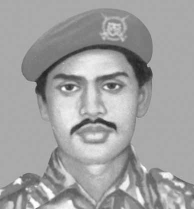
Jaffna Monitor hellojaffnamonitor@gmail.com 20 Prabhakaran along with Kolathur Mani, a Tamil nationalist leader from Tamil Nadu, at his Punithabhoomi base in Nittakaikkulam, Mullaitivu, during peace talks with the Premadasa government Prabhakaran along with Anton Balasingam at his Punithabhoomi base in Nittakaikkulam, Mullaitivu, during peace talks with the Premadasa government. Prabhakaran with his trusted lieutenants Pottu Amman, James, and Bhanu in Punithabhoomi. Prabhakaran with his wife Mathivathani at his Punithabhoomi base in Nittakaikkulam, Mullaitivu From left: Prabha (who was later dismissed by Prabhakaran from LTTE), LTTE Leader Prabhakaran, and Pottu Amman at the Punithabhoomi Base in Nittakaikkulam, Mullaitivu.
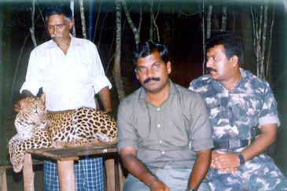
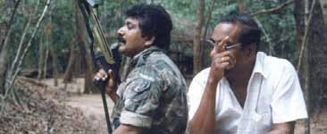
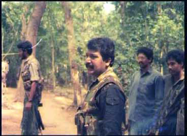
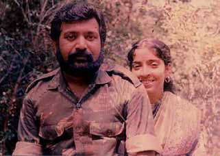
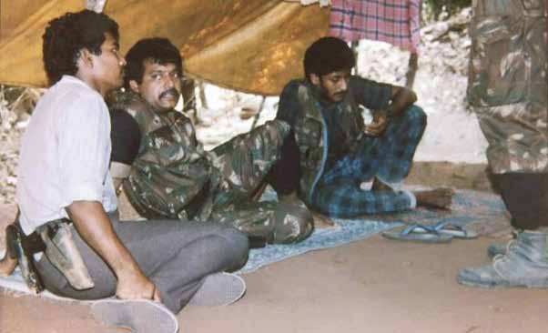